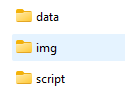

Environnement de travail
B. Maranget
20/01/2021
1 Objet
Projet R, markdown et git (galère probable pour les clés SSH)
2 Projet R et Markdown
2.1 Interface Rstudio
4 fenêtres
2.2 Créer un projet R
File / Nouveau projet
Le projet permet de conserver l’emplacement des fichiers.
Créer l’arborescence suivante

2.3 Le markdown
Créer un markdown dans le répertoire script dans Rstudio, le knitter.

2.4 paramétrage de la TOC et de l’execution des chunks
output:
html_document:
number_sections: yes
toc: yes
editor_options:
chunk_output_type: consolesource :
https://blog.wax-o.com/2014/04/tutoriel-un-guide-pour-bien-commencer-avec-markdown/
3 Git
3.1 Compte et projet
Créer un compte GIT et un projet
3.2 Cloner le projet sur sa machine
cloner le projet sur son pc avec la commande git clone et le lien vers le répertoire
3.2.1 Sur l’interface github
Récupérer le lien https du projet dans code

3.2.2 Dans une fenêtre cmd de windows
Pour ouvrir une fenêtre cmd, il suffit de faire le bouton windows et de taper cmd.

3.2.3 Installation des commandes git
Cela ne fonctionne pas … il faut installer les commandes git sous votre machine (sous Mac et Linux c’est pré-installé)
source : https://astuces-informatique.com/comment-installer-utiliser-git-sous-windows/
Faire l’installation et essayer à nouveau de cloner…
3.3 Clés SSH
L’utilisation des clés permet d’éviter la saisie du mot de passe.
3.3.1 Génération des clés
Pour pouvoir travailler ainsi, il faut avoir générer des clés
Ouvrir une fenêtre avec la commande cmd et saisir ssh-keygen
Le répertoire où la clé est créée est, par défaut, le répertoire utilisateur. (afficher les fichiers cachés est nécessaire)
Le répertoire utilisateur est à la racine de votre profil.

source :
https://www.lojiciels.com/comment-generer-des-cles-publiques-privees-ssh-sous-windows/
3.3.2 Copie de la clé publique sur le serveur
Au niveau du github, coin haut droit settings puis ssh keys
Il s’agit de récupérer le contenu de la clé, la commande en ligne
clip < .ssh/id_rsa.pub
(Sinon ouvrir le fichier et faire un copier - coller)
source :

3.4 Mise à jour du projet : 4 commandes à connaître
git pull
git add .
git commit -m "version finale veille cours"
git pushL6ECSIG Construction et utilisation des SIG